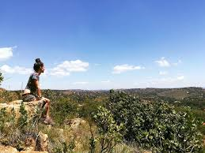

The 110 hectare Kloofendal nature reserve lies to the west of Johannesburg city centre in the suburb of Kloofendal, halfway between the malls of Clearwater and Westgate. It's a beautiful reserve with some incredible craggy quartzite outcrops and typical highveld vegetation..
EWhilst on a walk expect to see small mammals like duikers, dassies, mongoose, hedgehogs, the odd jackal, or mole rat. And if you're a real environmental enthusiast you can join the one-year field guide/environmentalist course run by the Kloofendal Nature Reserve..